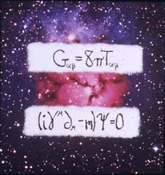

| < |
 |
|
For FolksTruth is cold. The Universe is not simply big, but big in a way that makes a person less than the least thing they know. Time is Deep, our waterbug feet never breaking the surface of the Universe's history. Yet nature creates. What wasn't before is now: atoms, stars, planets, daisies. The math used to describe the Universe must be cold and creative. |
For NerdsEinstein's field equations and Dirac's equation for relativistic quantum mechanics are two rich relations. Given the boundary conditions, the behavior of atoms and galaxies can be dissected. Yet bound by their analytic constraints, the equations cannot recombine with each other as atoms and galaxies do. Our math is cold but not inherently creative. This is the challenge of 21st century logic. |